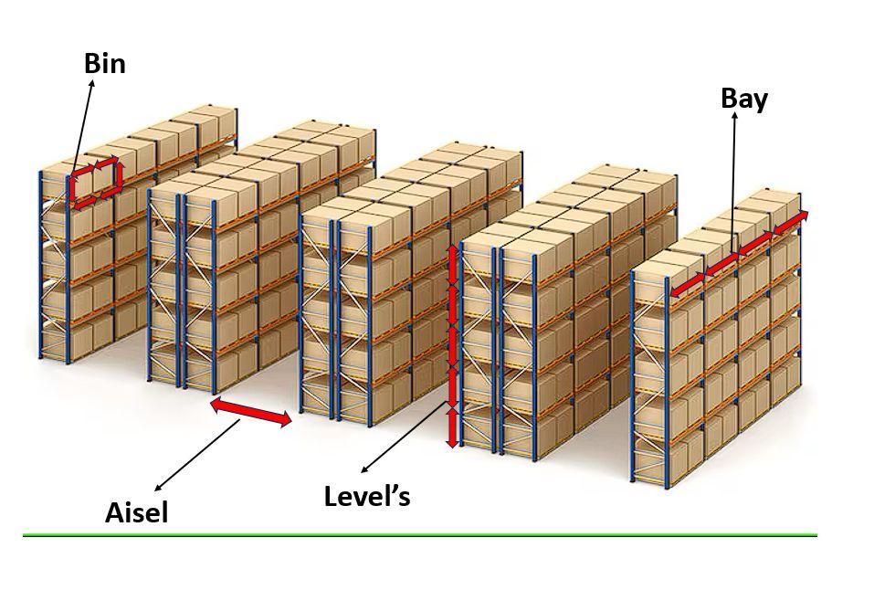
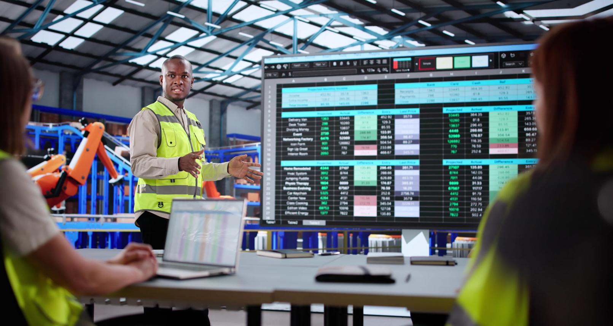

Every Layer of InventoryVisionHub's Warehouse Intelligence
InventoryVisionHub is a cloud-native SaaS platform built on a modular architecture real-time dashboards, MHE camera integration, proprietary spatial logic models, and UK GDPR-compliant infrastructure designed to serve UK mid-market 3PLs without requiring internal engineering teams.

Warehouse Visual Ontology (WVO)
Machine learning models that identify and "link" detected objects (pallets, totes, cartons) to precise spatial coordinates, allowing benchmarking and cloning of optimal storage logic across diverse facility footprints.
Discrepancy Delta Diagnostics
A proprietary diagnostic engine that automatically maps the root causes of inventory drift high-velocity pick errors, receiving-point friction, ghost inventory into structured forensic intelligence reports.
Passive Audit Infrastructure
Integrates with fixed cameras, forklift-mounted webcams, and MHE telemetry to enrich the spatial model with real-time operational data across all warehouse zones without halting operations.

Signal-to-Action Auto-Synthesis
Automatically deconstructs a single visual signal a blocked aisle or an empty-but-assigned rack into a complex, multi-step operational workflow, removing manual staff-to-data translation bottlenecks.

Community Waste Intelligence Network
A federated learning architecture enabling anonymised "Accuracy DNA" benchmarks from UK warehouses to continuously improve predictive models without any facility sharing sensitive commercial data.
Outcome-Learning Warehouse Memory
Closes the loop linking every successful discrepancy resolution to operational outcomes and automatically preserving the "Institutional Spatial DNA" of experienced warehouse supervisors.